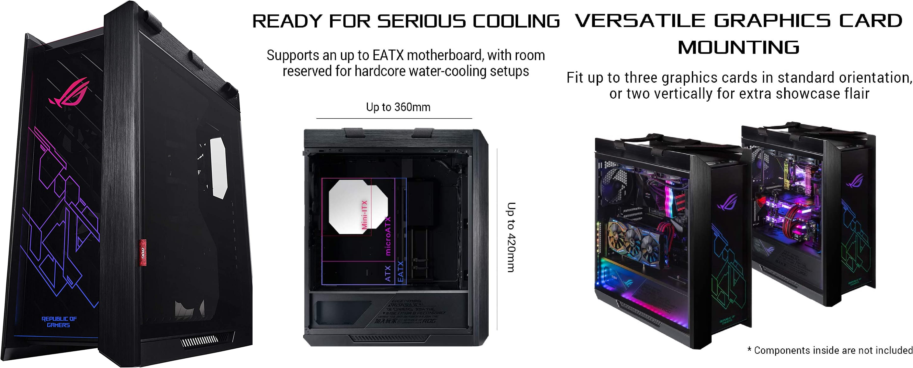

Caja de computadora
en informática, la caja, carcasa, chasis, tarro, gabinete o torre de computadora u ordenador es la estructura metálica o plástica, cuya función consiste en albergar y proteger la mayoría de los componentes de una computadora personal:Placa base Tarjetas de expansión Microprocesador y sus sistemas de refrigeración
Factores de forma: ATX, XT,AT, SSI CEB.

En informática, la caja, carcasa, chasis, gabinete o torre de computadora u ordenador es la estructura metálica o plástica, cuya función consiste en albergar y proteger la mayoría de los componentes de una computadora personal (generalmente excluyendo la pantalla, el teclado y el mause).
Placa base
Tarjetas de expansión
Microprocesador y sus sistemas de refrigeración
Memoria RAM en DIMMs, SO-DIMMs, zócalos o soldada directamente
Fuente de alimentación (hay excepciones),
Unidades de disco
Disqueteras, unidad ZIP, LS-120
Unidad de disco duro fija o removible
Unidades de Disco óptico en cualquiera de sus variantes
Unidad de estado sólido
Unidades combinadas (por ejemplo, lectoras de tarjeta con unidad DVD en formato de portátil)
Las cajas generalmente se construyen de acero (a menudo SECC: acero, electrogalvanizado, laminado en frío, bobina), aluminio y plástico. Otros materiales como el vidrio, la madera, el Polimetilmetacrilato e incluso los ladrillos de Lego2 (existen sets oficiales) han aparecido en cajas construidas en casa.